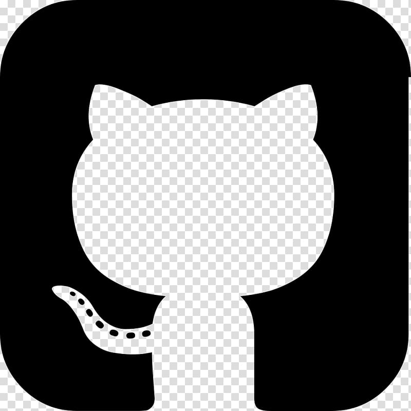
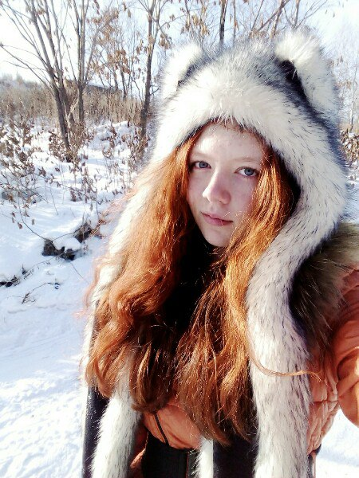

Привет! Меня зовут Ира, в этом году мне исполняется 19 лет. Я учусь в ДФВУ на направлении по ПМИ,
профиль МИОПД. Учусь я по целевой квоте от АО "Изумруд".
Я люблю
- Читать
- Заниматься творчеством
- Спать
- Смотреть фильмы и сериалы
- Учиться по субботам
Успех, как и большинство вещей, начинается с вашего к нему отношения. И если вы за него боретесь, то вам в этом поможет новая подборка мотивирующих цитат об успехе и достижениях, которую я собрал. Мотивирующие цитаты великих людей — цитаты проверенные временем и сформировавшиеся в результате деятельности великих людей. 1. Не проблемы должны толкать вас в спину, а вперед вести мечты. Дуглас Эверетт 2. Вы не будете расти, если не будете пытаться совершить что-то за пределами того, что вы уже знаете в совершенстве. Ральф Эмерсон 3. Не бойтесь жизни. Поверьте, что жизнь достойна того, чтобы прожить, и вам будет дано по вере вашей. Уильям Джеймс 4. Вы никогда не сумеете решить возникшую проблему, если сохраните то же мышление и тот же подход, который привел вас к этой проблеме. Альберт Эйнштейн 5. А если ты не уверен в себе ничего хорошего никогда не получится. Ведь если ты в себя не веришь, кто же поверит? 6. Мы – рабы своих привычек. Измени свои привычки, изменится твоя жизнь. Роберт Кийосаки 7. У вас будут неудачи. У вас будут травмы. Вы будете ошибаться. У вас будут периоды депрессии и отчаяния. Семья, учеба, работа, проблемы быта – все это не раз и не два станет помехой тренингу. Однако стрелка вашего внутреннего компаса должна всегда показывать одно и тоже направление – к цели. Стюарт МакРоберт